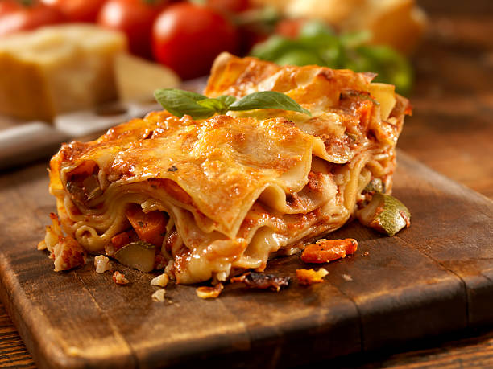

Lasagna

Description
Homemade lasagna isn't as hard to make as it seems. Don't be intimidated by all the layers of delicious Italian flavor — try this homemade lasagna recipe today!
Ingredients
- Meat
- Onion
- Canned Tomatoes
- Fresh Herbs
- Sugar
- Spices and seasonings
- Noodles
- Cheese
Steps
- Cook the ground meat in a skillet until browned and crumbly. Add the onion and continue cooking until it's translucent.
- Stir in the canned tomato products, half of the parsley, garlic, basil, 1.5 teaspoons of salt, oregano, and sugar.
- Boil the lasagna noodles in lightly salted water until they're al dente.
- Mix cottage cheese, Parmesan cheese, eggs, the remaining parsley, the remaining salt, and pepper in a bowl.
- Layer the ingredients according to the recipe (starting with sauce and ending with mozzarella) until the lasagna is assembled.
- Cover with foil and bake in the preheated oven for about half an hour. Remove the foil and continue baking until the top is golden brown.